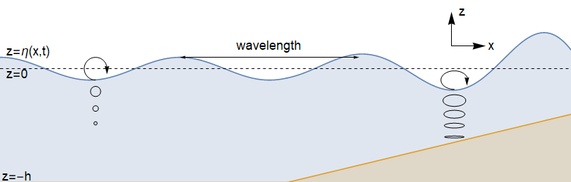

12. Water waves¶
12.1. The flow geometry¶
We consider the scenario shown below, where the axis \(x\) points in the direction of wave motion, and axis \(z\) points perpendicular to the water surface. We will assume plane motion, so there is no \(y\) dependence.
{kind=link}
12.2. Mass transport¶
We make the simplifying assumption that the flow is irrotational, so that the velocity field can be written as the gradient of a potential \(\underline{u}=\nabla\phi(\underline{x},t)\), and we obtain from the incompressibility condition
Seeking a travelling plane wave solution of the form \(\phi=F(z)G(x-c t)\) provides
This choice of separation constant gives us exponential behaviour in the \(z\) direction, and oscillating behaviour in the \(x\)-direction:
We will take \(k>0\) and \(\phi_0=0\), without loss of generality.
12.3. Bernoulli’s equation for unsteady potential flow¶
Recall that in equation (8.4) we obtained the following result from Euler’s equation, with a body force \(\underline{F}=\underline{g}\)
Previously, we assumed that the flow was steady, and we took the scalar product with \(\underline{u}\) to eliminate the vorticity term, obtaining a result for the head \(H\) along a streamline. Here, we will not assume that the flow is steady, but we will instead note that for potential flow \(\underline{u}=\nabla\phi(\underline{x},t)\) the vorticity is identically zero, and so the equation of motion simplifies to
Integrating gives the following result, where \(F(t)\) is an arbitrary function that does not affect the velocities, since they are obtained by taking the gradient:
12.4. Free surface conditions¶
The surface equation is of the form \(z=\eta(x,t)\). We will assume that the free surface displacement \(\eta\) is small and apply Taylor expansion to the derivatives of \(\phi\) in the following manner:
Any terms that are quadratic order or higher will be neglected. We will justify this approach a posteriori.
12.4.1. Dynamic boundary condition¶
We will apply Bernoulli’s theorem on the surface. Since \(F(t)\) is arbitrary, we will take \(F(t)=\frac{p_0}{\rho}\), where \(p_0\) is the surface pressure (atmospheric pressure). Therefore we obtain:
12.4.2. Kinematic boundary condition¶
We define
Since fluid particles on the surface must remain there, \(S\) is constant following the fluid. Application of \(\frac{DS}{Dt}=0\) with \((u,v,w)=\nabla\phi\) gives
12.5. Bottom conditions¶
12.5.1. Deep water¶
For deep water, we impose a requirement that the velocity remains bounded as \(z\rightarrow -\infty\). For the solution given in (12.3), we find that \(D=0\) and we have
12.5.2. Finite depth¶
For shallow/finite depth water, we impose a condition of no flow through the bed at \(z=-h\). That is,
For the solution given in (12.3), we find that \(Ce^{-kh}=De^{kh}\) and we have
after defining \(A=2C\).
12.6. Dispersion relations¶
12.6.1. Deep water¶
Application of the combined surface condition (12.11) to the deep water solution (12.12) gives the dispersion relation
where \(c\) is the phase velocity. The result demonstrates that longer waves travel faster. Atlantic storms generate long waves of small amplitude (swell), which travel quickly (up to thousands of kilometers per day), and these waves arrive on the West Coast of Britain well before the slower-moving storm.
Exercise 12.1
Surface waves generated by a mid-Atlantic storm arrive at the British coast with a period of 15 seconds. A day later the period of the waves arriving has dropped to 12.5 seconds. Roughly how far away did the storm occur?
12.6.2. Finite depth¶
Application of the combined surface condition (12.11) to the deep water solution (12.14) gives the dispersion relation
Exercise 12.2
Consider the case of shallow water, so that \(\frac{1}{k}\gg h\). Use the result \(\tanh(\theta)\simeq \theta\) for \(\theta\ll 1\) to simplify the finite depth dispersion relation, and state in words what the result tells us about dispersion in shallow water.
Show also that when \(\frac{1}{k}\ll h\) the finite depth dispersion relation approaches the result given for deep water.
12.7. “Small amplitude” condition¶
In the dynamic boundary condition, we neglected \(u^2\) and \(v^2\) compared to \(g\eta\), and in the kinematic boundary condition we neglected \(u\partial\eta/\partial x\) compared to \(w\). Both of these assumptions are justified if \(Ak\ll 1\), which therefore requires that the wave amplitude \(A\) is vanishingly small compared to the wavelength \(\frac{2\pi}{k}\). For the longest ocean waves, such as waves generated by earthquakes, the approximation breaks down. For the seas around Europe the depth of the water over the continental shelf is far less than 1km, so a revised theory for shallow water is needed.
12.8. Particle paths¶
Assume that the particle motion is small compared to the initial displacement \((x_0,z_0)\), so that we can write
Then
For deep water this gives
[If you are wondering how these can balance, it is because the wave amplitudes are small: \(Ak\sim \epsilon\).] Integrating with respect to \(t\) and combining the results gives
The particle paths are therefore circular, and the radius of the circles \(Ae^{k z_0}\) decreases exponentially with depth.
Exercise 12.3
By assuming that the particle motions for shallow water gravity waves are small, describe the shape of the particle paths for this case.